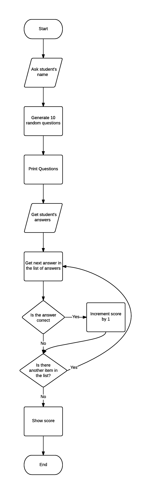

A primary school teacher wants a computer program to test the basic arithmetic skills of her students. The program should generate a quiz consisting of a series of random questions, using in each case any two numbers and addition, subtraction and multiplication. The system should ask the student's name, then ask 10 questions, output if the answer to each question is correct or not and produce a final score out of 10.
After I have written the code I will test that the program performs as expected against these success criteria.
I have made a flow chart to show the high level structure of the program I will be writing. 
Alternately, I could have made the program ask a question then ask an answer, but I believe this solution to be better suited to the medium which I have chosen to deliver this program on: the web.
I have chosen to write this program as a web application instead of a commandline application for several reasons:
Web pages are served in a language called HTML which describes the content of the page and how to display it. HTML however is not a programming language because while it does provide a way of collecting user input, it does not provide any way of using logic. Because of this limitation, I will have to write a program which generates HTML and receives the user input from HTML.
I have chosen to write the program which generated the HTML in a programming language called ruby because I am familiar with the language from previous projects and it has many tools already available for helping generate and server webpages.
In particular I will be using a web framework called "padrino" to help me write the web application. The padrino framework allows me to write in terms of models, views and controllers.
Before I show you my code, I need to make some basic explanations about some of the non-obvious rules and syntax of the ruby programming language:
do and finishing with end or using curly braces are blocks. They specify their
arguments like functions but use the syntax |arg1, arg2|
[ "one", "two" ].each do |element|
puts element # Puts is ruby's "print" statement
end
one
two
function(arg1, arg2)function arg1, arg2def name
return firstname + " " + lastname
end
def name
firstname + " " + lastname
end
I also want to note that tasks 1 and 2 were implemented at the same time so the code is for both tasks.
Creates a sequel model called |
|
There is one student to many quizzes. This is a helper that defines things such as |
|
The student's name is their |
|
|
Returns an array of the quizzes which are finished. |
|
|
Finds the student's average score. Uses only completed quizzes because non-completed quizzes have no score.
Reduce is a function which iterates through every completed quiz, setting This code adds all the scores together and divides them by the number of quizzes which we all know is how we get an average! |
|
Takes the completed quiz with the highest |
|
|
Loads the |
|
|
Quiz model, same as before. |
|
Like |
|
This method is for retrieving the list of questions in this quiz. It overrides a default The data is stored as a JSON hash with a key from 0 to 9 identifying the question, and a string in the
format
|
|
This method sets the list of questions for this quiz. It essentially does the opposite of the previous
statement. The method can either accept a |
|
This is almost exactly the same as the first |
|
|
Sets the list of answers for this quiz. This method simply converts the ruby hash given directly into JSON unlike previous examples. |
|
This method returns a map of questions to answers. It checks to see if either the questions or answers are
present first, then creates an array of arrays using the |
|
This method gets the score for the quiz. It uses the |
|
|
|